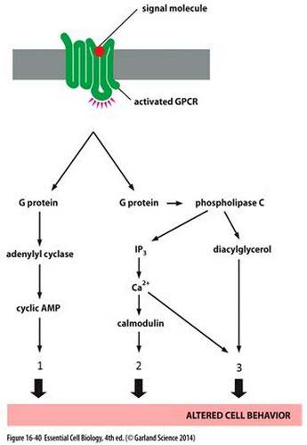
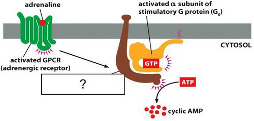
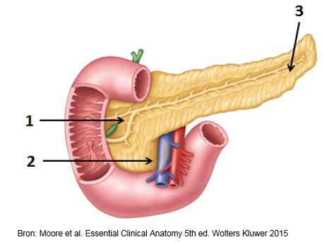

Vraag 1
Via welke hersenzenuw worden de thorax- en abdomen-organen parasympatisch geinnerveerd?
Vraag 2
Welke stelling is correct? De gesprekstechniek metacommunicatie:
Vraag 3
Welke symptomen kunnen optreden bij een patient met een acute, ernstige longembolie? (meerdere antwoorden zijn mogelijk)
Meerdere antwoorden mogelijk.
Vraag 4
Waarom zijn steroid hormonen niet verpakt in secretoire vesicles in de cel?
Vraag 5
Kies de juiste alternatieven.
Met welke structuur hebben de onderdelen van de pancreas een nauwe topografische relatie? Processus uncinatus heeft een nauwe relatie met de en het collum pancreatis met de .
Vraag 6
Cyclisch AMP is een second messenger molecuul. cAMP wordt gevormd na activering van een G-eiwit gekoppelde receptor. Om celsignalering via cAMP te laten stoppen, wordt het cAMP snel afgebroken. Door welk enzym gebeurt dit?
Vraag 7
Stelling: 'Stimulatie van de “cardiale” muscarine receptor (M2) veroorzaakt toename van de K⁺ conductantie.' Deze stelling is:
Vraag 8
De heer A. is 79 jaar. 's Nachts staat hij op om te gaan plassen, maar voordat hij de WC heeft bereikt valt hij flauw. Zijn echtgenote ziet dat hij zijn ogen open heeft maar niet reageert. Hij laat zijn urine lopen en is heel erg bleek. Voorgeschiedenis: ziekte van Parkinson, hypertensie.
Wat is op basis van deze gegevens de meest waarschijnlijke reden van het flauwvallen?
Vraag 9
U ziet hier een schematische weergave van drie belangrijke signaleringsroutes. Welk van de onderstaande volgorde is correct?

Vraag 10
Welke hersenzenuwen bevatten zenuwvezels die onderdeel zijn van het parasympatische zenuwstelsel? Selecteer drie juiste antwoorden.
Meerdere antwoorden mogelijk.
Vraag 11
Cyclisch AMP is een second messenger molecuul. cAMP wordt gevormd na activering van een G-eiwit gekoppelde receptor. Om celsignalering via cAMP te laten stoppen, wordt het cAMP snel afgebroken. Door welk enzym gebeurt dit?
Vraag 12
Op uw spreekuur stelt u vast dat een patient aan griep lijdt. U stelt de persoon voor om aspirine (acetylsalicylzuur) te gebruiken om de koorts te beperken. Op basis van welk werkingsmechanisme zal aspirine de koorts remmen?
Vraag 13
Een man van 21 jaar loopt in de Kalverstraat. Hij staat bij een etalage te kijken op het moment dat hij plotseling flauwvalt. Omstanders zien dat hij zijn urine laat lopen. Nadien blijkt hij op zijn tong gebeten te hebben. Hij heeft ook een hoofdwond van 5 cm. Hij heeft hoofdpijn en is misselijk.
Welke twee gegevens pleiten meer voor epilepsie dan voor een vasovagale collaps als oorzaak van de wegraking?
Meerdere antwoorden mogelijk.
Vraag 14
Wat is een belangrijke functie van de kinase Tor?
Vraag 15
De pancreas wordt gevasculariseerd door aftakkingen van twee arteriën.
Aftakkingen uit welke twee arteriën zijn dit? Dat zijn aftakkingen uit de:
Meerdere antwoorden mogelijk.
Vraag 16
Een belangrijk kenmerk van septische shock is dat:
Vraag 17
Een vrouw van 21 jaar staat rond 17.00 uur in een volle, drukke en warme metro. Ze kan zich met moeite verplaatsen door de drukte. Ze is op weg naar huis en erg moe. Ze voelt zich langzaam misselijk worden en gaat wazig zien. Dan valt ze flauw. Omstanders zien dat ze haar urine laat lopen en dat haar benen schokkende bewegingen maken. Als ze na een paar minuten bijkomt voelt ze zich erg suf. Welke twee gegevens pleiten meer voor een vasovagale collaps dan epilepsie als oorzaak van de wegraking?
Meerdere antwoorden mogelijk.
Vraag 18
In welk van de onderstaande eiwitten worden vaak mutaties gevonden in humane kankercellen?
Vraag 19
Anna B. is een 14-jarig meisje dat ongeveer 3 weken is begonnen met roken. Zij rookt nu 6-10 sigaretten per dag en merkt daarbij dat iedere dag de eerste sigaret lichte hartkloppingen (=tachycardie) veroorzaakt die niet meer optreden bij de volgende sigaretten. Welke vorm van adaptatie lijkt te zijn opgetreden bij Anna?
Vraag 20
Welke van de onderstaande stellingen met betrekking tot shock is/zijn juist/onjuist? 1. Septische shock kan leiden tot multiple orgaan falen. 2. Cardiogene shock kan leiden tot multiple orgaan falen.
Vraag 21
Welke hersenzenuwen bevatten parasympatische zenuwvezels? Kies twee juiste antwoorden.
Meerdere antwoorden mogelijk.
Vraag 22
Een man van 19 jaar komt bij de huisarts. Hij vertelt dat hij gisteren tijdens een hardloopwedstrijd na 3 km flauw viel. Na enkele minuten kwam hij weer bij. De huisarts besluit de man door te verwijzen naar de cardioloog voor verder onderzoek.
Wat is de belangrijkste reden om door te verwijzen?
Vraag 23
U ziet hier een schematisch overzicht van een signaleringsroute.
Welk enzym is betrokken bij de productie van cAMP (zie vraagteken)?

Vraag 24
Welke baroreceptor gemedieerde compensatoire reflexen treden op bij een ernstige bloeding:
Vraag 25
In de afwezigheid van omgevingsfactoren, zal een circadiaan ritme
Vraag 26
Stelling: Stimulatie van α2-receptoren stimuleert thrombocytenaggregatie.
Is deze stelling juist of onjuist?
Vraag 27
Stellingen
1. De vier hoofdgroepen van shock zijn: hypovolemisch, cardiogeen, obstructief en distributief
2. Diffuse intravasale stolling (DIS) is een uiting van de pro-coagulante conditie bij sepsis.
1. De vier hoofdgroepen van shock zijn: hypovolemisch, cardiogeen, obstructief en distributief
2. Diffuse intravasale stolling (DIS) is een uiting van de pro-coagulante conditie bij sepsis.
Vraag 28
De Ras-MAPK signaleringsroute wordt geactiveerd door activatie van:
Vraag 29
Stelling
Stimulatie van de “cardiale” muscarine receptor (M2) veroorzaakt toename van de K+ conductantie.
Stimulatie van de “cardiale” muscarine receptor (M2) veroorzaakt toename van de K+ conductantie.
Vraag 30
Bekijk de afbeelding.
Welke structuren worden hier aangeduid met de cijfers 1, 2 en 3?

Vraag 31
Nadat de allerhoogste concentratie Carbachol is toegevoegd is de konijnendarm bij het (E-) practicum volledig gecontraheerd. Aan het eind wordt dan EDTA toegevoegd aan het medium van de konijnendarm.
Wat gebeurt er met de darm en hoe kun je dit verklaren?
Vraag 32
Zweten is een belangrijke manier om warmte kwijt te raken, bijvoorbeeld tijdens sporten. Wat kan een negatief gevolg zijn van deze manier van warmteverlies?
Vraag 33
Kies de juiste alternatieven.
Welk deel van de pancreas heeft een anatomisch-topografische relatie met de rechternier: en met de milt: ?
Vraag 34
Kies de juiste alternatieven.
Cholera toxine modificeert de - subunit en de intrinsieke GTPase activiteit.
Vraag 35
Waar leidt stimulatie van de parasympaticus toe?
Vraag 36
In welk deel van de anamnese zal de gesprekstechniek agenderen voornamelijk worden toegepast in de huisartspraktijk?
Vraag 37
In afwezigheid van elke omgevingsinformatie, zal een biologisch circadiaan ritme:
Vraag 38
Welke signaleringsroute wordt door cyclisch AMP geactiveerd?
Vraag 39
Waar leidt stimulatie van β2 receptoren toe?
Vraag 40
Een man van 70 jaar is bij de huisarts op consult omdat hij is flauwgevallen. Tijdens de anamnese komen de volgende punten naar voren:
1. Het gebeurde toen hij ’s nachts ging plassen.
2. Hij voelde zich twee-drie seconden duizelig en viel toen neer.
3. Hij is volgens zijn echtgenoot twee minuten buiten bewustzijn geweest.
4. Hij was tijdens het bewustzijnsverlies heel erg bleek.
1. Het gebeurde toen hij ’s nachts ging plassen.
2. Hij voelde zich twee-drie seconden duizelig en viel toen neer.
3. Hij is volgens zijn echtgenoot twee minuten buiten bewustzijn geweest.
4. Hij was tijdens het bewustzijnsverlies heel erg bleek.
Waarom is verdere cardiologische analyse niet nodig?
Cardiologische analyse is niet nodig vanwege de informatie uit punt:
Cardiologische analyse is niet nodig vanwege de informatie uit punt: